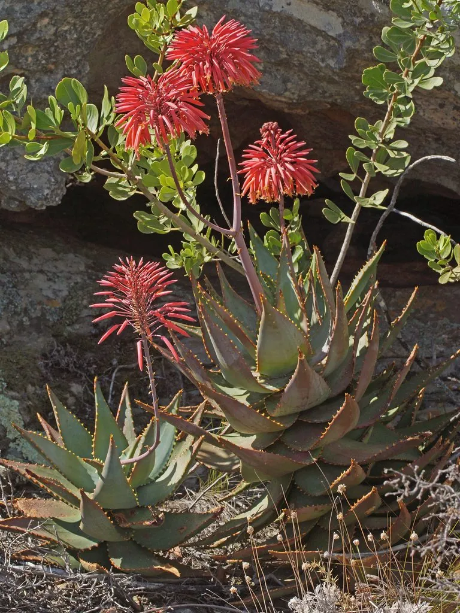

多肉植物 · 植物界
不夜城芦荟 Aloe perfoliata

阿福花科芦荟属多肉，叶片肥厚、边缘有齿，橙红色花冬季开放，原产南非，是株型紧凑、容易群生的观赏芦荟。
- 分类
- 门被子植物门纲单子叶植物纲目天门冬目科阿福花科属芦荟属
- 栖息环境
- 南非干旱地区的石质坡地与灌丛
- 地理分布
- 原产南非，世界各地盆栽，中国各地常见
- 保护级别
- 暂无评估
物种志
不夜城芦荟为阿福花科芦荟属的多年生肉质草本，茎短，叶片肥厚、披针形，长 10–20 厘米，先端尖，叶面深绿色，边缘有白色或淡黄色小齿，叶背常带白斑。叶片排列成莲座状，直径 20–30 厘米，基部容易萌生侧芽。花梗自叶丛中抽出，花序穗状，花橙红色，花期冬季至早春；果实为蒴果。
不夜城芦荟原产南非的干旱地区，喜阳光充足、温暖干燥和通风良好的环境，耐旱、怕积水，不耐严寒。它株型紧凑、叶色深绿，冬季开出橙红色花序，是常见的观赏芦荟之一。栽培用排水良好的沙质土，生长期干透浇透，冬季保持 5℃ 以上；繁殖以分株为主，将母株周围的侧芽掰下另栽即可，也可扦插。
形态与习性
- 株高莲座直径 20–30 厘米
- 叶片披针形，肥厚，边缘有齿
- 花期冬季至早春，花橙红色
- 光照喜充足阳光，夏季适当遮阴
- 水分耐旱，干透浇透
- 土壤排水良好的沙质土
- 繁殖分株为主，也可扦插
- 主要用途盆栽观赏、庭院点缀
趣味知识
- 不夜城芦荟冬季开花，橙红色花序在少花的季节格外醒目。
- 它基部容易长出侧芽，几年就能长成满满一盆。
- 芦荟叶片中的凝胶可缓解轻度烫伤，但观赏品种不宜随意食用。